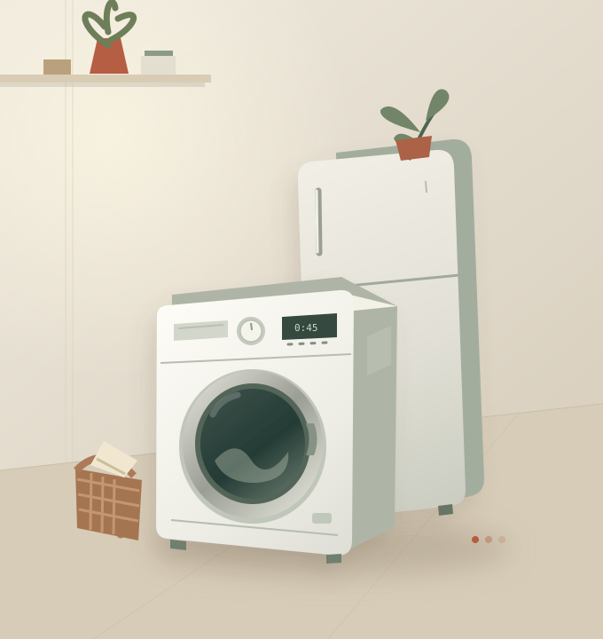

Сначала разбираемся
Уточняем модель и симптомы. Диагностика помогает определить причину, состав работ и необходимые детали.
Когда привычная техника подводит,
начните с понятного решения.
Разберёмся в проблеме и обсудим ремонт.

Выберите устройство.
Подскажем, что важно указать
при обращении в сервис.
Без догадок о стоимости.
Без ремонта без вашего согласия.
С вниманием к вашей задаче.
Уточняем модель и симптомы. Диагностика помогает определить причину, состав работ и необходимые детали.
Стоимость, сроки и условия диагностики согласуются отдельно. Если ремонт нецелесообразен, обсуждаем это до решения.
После ремонта проверяется работа техники. Выполненные работы, стоимость и согласованные условия гарантии фиксируются в документах.
Сравните предложенную стоимость ремонта с ценой новой техники. Это поможет подготовиться к разговору с мастером.
На решение также влияют возраст и состояние техники, доступность деталей и условия гарантии.
Разница в затратах на покупку: 40 000 ₽
Числа приведены для примера. Это сравнение введённых сумм, а не оценка ремонта и не рекомендация о покупке. Доставка и установка не учтены.
Описать свою ситуацию ↗Несколько простых шагов,
чтобы начать.
Укажите тип и модель устройства, что произошло и какой код ошибки появился, если он есть.
Уточните возможность обслуживания, удобное время и стоимость диагностики до встречи с мастером.
После диагностики обсудите стоимость и срок ремонта. Работы начинаются после вашего согласия.
Описание помогает подготовиться к диагностике. Точный состав работ и стоимость определяются после проверки техники и согласуются до ремонта.
Название и модель техники, описание симптомов и код ошибки. Фото маркировки поможет найти модель. Не нужно самостоятельно разбирать устройство.
Вы можете отказаться от ремонта. Условия и стоимость уже выполненной диагностики стоит согласовать заранее, до встречи с мастером.
Документ с перечнем работ и деталей, итоговой стоимостью и согласованными условиями гарантии. Уточните эти условия перед началом работ.
Соберите описание за пару минут.
С ним будет проще обратиться
в сервис и ничего не забыть.